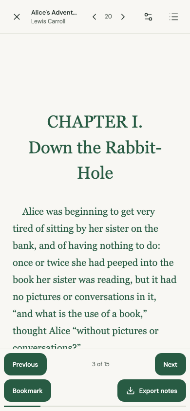
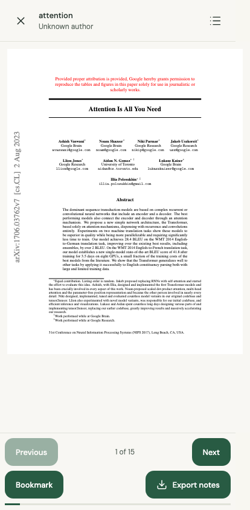
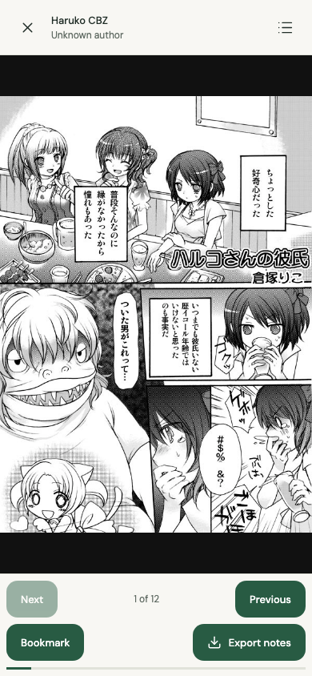

Fresh Chromium browser contexts at 390 px, with each book imported through Glassleaf’s visible file chooser. These captures are Chromium web evidence, not iOS or Android native-reader evidence.

EPUBAlice opened from Contents at the third spine document; rendered prose.

PDFattention.pdf rendered by a canvas page without an iframe.

CBZHaruko comic image rendered from the imported archive.